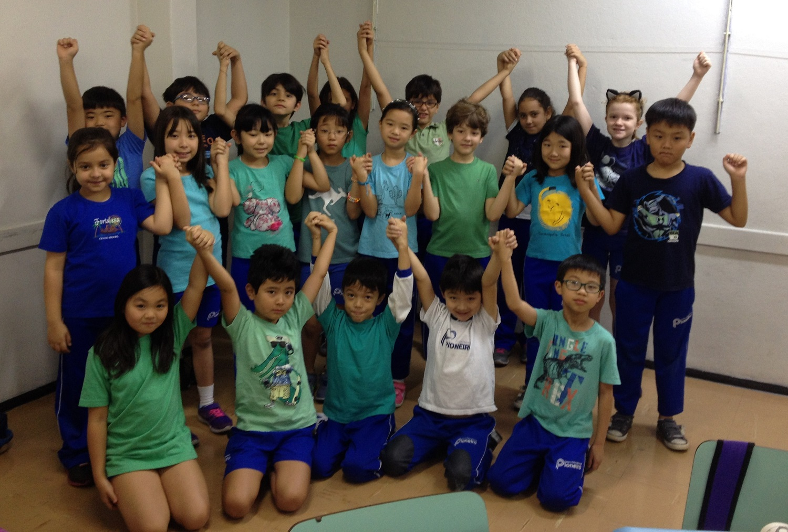

Feito pelos alunos, feito para você!
Peça teatral: A tartaruguinha verde
quarta-feira, 9 de novembro de 2016; por Admin

A foto mostra os alunos de mãos dadas no final da peça teatral , dizendo: “A caridade é o caminho”; Foto retirada do site pioneiro.com.br
Os alunos do 3°A ensaiaram para uma apresentação bem especial: a pe√ßa teatral “A tartaruguinha verde”. O trabalho foi desenvolvido em grupo, visando o respeito, ajuda mútua e o companheirismo. Ressaltando a todo momento a importância de usar o tom de voz alto para serem compreendidos, valorizando sempre a entonação e as expressões gestuais e acima de tudo a amizade.
Esse sem dúvida foi um dos momentos mais marcantes para todos e uma oportunidade de mostrar alguns dos objetivos trabalhados durante o ano.
Até o ano que vem!
Adicione um comentário sobre essa notícia: OBS: Esse sistema de comentários só funcionará, quando o domínio do site for pago!